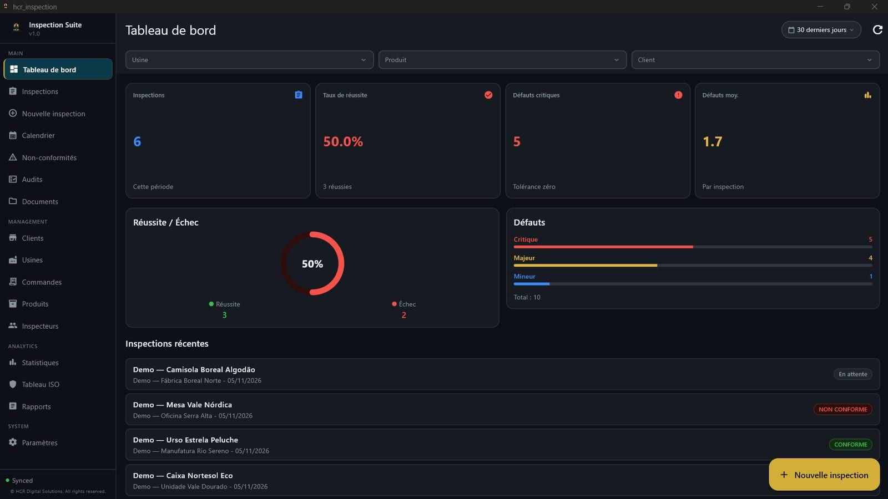

Inspections avec échantillonnage AQL
Définissez le lot et le niveau de qualité acceptable, puis conduisez l'inspection avec un assistant, du début à la décision.
Du plan d'échantillonnage au rapport final : HCR Inspection Suite réunit inspections AQL, défauts, photos dans le rapport PDF, non-conformités et actions correctives (CAPA) dans une seule plateforme : une application Windows qui fonctionne hors ligne et une version web (SaaS) dans le navigateur, y compris sur mobile.
L'accès se fait sur invitation pendant le lancement. Nous répondons en général sous 1 à 2 jours ouvrés.

De l'inspection AQL au rapport PDF prêt à envoyer : assistant AQL, défauts, non-conformités avec actions correctives (CAPA), calendrier et statistiques.
La vidéo n'est chargée depuis YouTube que lorsque vous appuyez sur lecture. Le commentaire est en portugais, avec sous-titres en français. Voir sur YouTube (sous-titres en EN, FR, ES et chinois).
Quelques écrans de HCR Inspection Suite, avec des données de démonstration.
Définissez le lot et le niveau de qualité acceptable, puis conduisez l'inspection avec un assistant, du début à la décision.
Joignez des photos à l'inspection, par produit et par section, et retrouvez-les dans le rapport PDF, sans coller les images à la main.
Générez des rapports PDF pour le client ou l'usine, prêts à envoyer, sans refaire le travail dans Excel ou Word.
Ouvrez des non-conformités et suivez les actions correctives jusqu'à la clôture, au même endroit que l'inspection.
Planifiez les inspections dans le calendrier (avec synchronisation optionnelle Google Calendar ou Outlook) et suivez les résultats.
Travaillez en usine ou en entrepôt, même sans réseau. Les données se synchronisent au retour de la connexion.
Les inspections, non-conformités et actions correctives (CAPA) enregistrées dans l'application restent documentées et traçables, ce qui aide à conserver des preuves pour les audits internes et externes d'un système de management de la qualité ISO 9001. HCR Inspection Suite n'est pas un système de management certifié et ne remplace pas la certification de votre entreprise : c'est l'outil qui organise le travail d'inspection.
Pour les responsables qualité, les inspecteurs et les équipes de contrôle qualité qui font des inspections sur le terrain puis doivent clôturer le rapport : usines, fournisseurs, importateurs et sociétés d'inspection.
HCR Inspection Suite est un produit de HCR Digital Solutions, une startup portugaise (micro-entreprise) de logiciels basée à Santa Maria da Feira. Elle a été créée par Hugo Resende, Quality Manager, pour celles et ceux qui font des inspections puis doivent clôturer le rapport. Nous sommes petits, nous parlons directement aux utilisateurs et nous améliorons le produit grâce aux retours des premiers utilisateurs.
L'AQL (Acceptable Quality Limit, ou niveau de qualité acceptable) est le critère d'échantillonnage qui permet de décider, à partir d'un échantillon du lot, si ce lot est accepté ou rejeté, sans inspecter toutes les pièces.
Oui. L'application Windows conserve une copie locale des données nécessaires au travail et se synchronise avec le serveur dès qu'une connexion est disponible. La version web nécessite une connexion internet.
En portugais, en anglais et en français.
Écrivez à HCRFinanceMaster@gmail.com. Pendant le lancement, l'accès se fait sur invitation.
Les connexions utilisent HTTPS, les mots de passe sont stockés uniquement sous forme de hachage et les données de chaque organisation sont isolées au niveau de la base de données. Les détails, y compris le lieu de traitement des données, figurent dans la politique de confidentialité.
Il n'y a pas encore de tarifs publics. Pendant le lancement, l'accès se fait sur invitation : demandez l'accès et dites-nous combien d'utilisateurs et d'inspections vous avez, nous répondrons avec nos conditions.
Il n'y a pas encore d'intégrations ERP. HCR Digital Solutions développe aussi des logiciels et des intégrations sur mesure ; si vous en avez besoin, parlez-nous.
L'application native est uniquement pour Windows. Il existe aussi une version web (SaaS) qui fonctionne dans le navigateur, y compris sur mobile, sans installation. Il n'y a pas d'applications natives pour Mac, Android ou iOS.
Il aide à enregistrer et à tracer inspections, non-conformités et actions correctives, des enregistrements typiques d'un système ISO 9001. Ce n'est ni une certification ni un système de management complet.